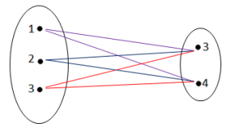
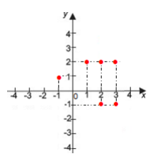

CAPÍTULO 12: A INDÚSTRIA TÊXTIL
ESTUDANDO FUNÇÕES
Contextualizando
A INDÚSTRIA TÊXTIL
A indústria têxtil tem como objetivo a transformação de fibras em fios, de fios em tecidos, de tecidos em peças de vestuário e, têxteis domésticos (roupa de cama e mesa) ou em artigos para aplicações técnicas (geotêxteis, airbags, cintos de segurança, etc.). As indústrias têxteis têm seu processo produtivo muito diversificado, ou seja, algumas podem possuir todas as etapas do processo têxtil (fiação, tecelagem e beneficiamento) outras podem ter apenas um dos processos (somente fiação, somente tecelagem, somente beneficiamento ou somente fiação e tecelagem, etc.).
A indústria têxtil pertence à cadeia produtiva têxtil, cujo início se encontra nos produtores de matérias-primas (algodão e demais fibras), insumos (corantes têxteis, pigmentos têxteis, produtos auxiliares, etc.), e nos fabricantes de máquinas e equipamentos têxteis e encerrase no comércio de venda final ao consumidor.
A ideia de transformação – fibras transformandose em fios, fios em tecidos e tecidos em peças manufaturadas com as mais variadas finalidades que caracteriza a indústria têxtil, fundamenta a ideia do conceito matemático de função.
O que significa dizer que uma função matemática está associada à ideia de transformação?
(RE)CONSTRUINDO CONHECIMENTOS
Caro aluno, nesse capítulo, vamos construir a ideia intuitiva de função para poder definir esse conceito.
Inicialmente, para aprender um pouco sobre a história da indústria têxtil no Brasil, vamos diferenciar uma tabela de um gráfico, uma vez que tanto as tabelas como os gráficos expressam relações que indicam transformações.
O processo de industrialização no Brasil teve seu início com a indústria têxtil. Suas raízes precederam a chegada e a ocupação do país pelos portugueses, uma vez que os índios que aqui viviam já exerciam atividades artesanais, utilizando técnicas primitivas de entrelaçamento manual de fibras vegetais, transformando-as em telas utilizadas em várias finalidades, inclusive para proteção do corpo.
A partir do ano de 1500, podem ser identificadas quatro etapas importantes para a definição da evolução histórica da indústria têxtil no país: a fase colonial, a fase de implantação, a fase da consolidação e a fase atual.
Observe as tabelas e os gráficos a seguir, que nos dão informações da evolução desse processo de evolução da indústria têxtil no Brasil.
Observe, nas tabelas a seguir o número de fábricas, teares, da indústria têxtil, empregos e valores movimentados no Brasil desde 1840, fase de implantação, até a fase atual.
Observe as tabelas abaixo e responda as perguntas.
Tabela 1| Equipamentos | Anos | |
|---|---|---|
| 1840 | 1881 | |
| Fábricas | 20 | 44 |
| Teares | 385 | 1540 |
| Fusos | 1.5000 | 60.000 |
- Quantas fábricas da Indústria Têxtil havia no Brasil em 1840? E em 1881?
- Quantos teares havia no Brasil em 1840? E em 1881?
- Quantos fusos havia no Brasil em 1840? E em 1881?
- Considerando que houve um aumento significativo na indústria têxtil no Brasil de 1840 a 1881, pode-se afirmar que o número de fábricas foi 2 vezes maior e o número de teares foi _____________ maior.
Tabela 2
| Número de fábricas | Empregos | |
|---|---|---|
| 1881 | 44 | 5.000 |
| 1913 | 200 | 78.000 |
- De 1881 a 1913 (véspera de 1a Guerra Mundial) qual foi o aumento do número de fábricas?
- Qual foi o aumento do número de empregos?
- E que intervalo de tempo pode-se verificar esse desenvolvimento da indústria têxtil?
- Na tabela abaixo, estão relacionadas duas grandezas: Número de anos e número de teares existentes no Brasil a cada ano
Tabela 3
| Anos | Teares |
|---|---|
| 1840 | 385 |
| 1845 | 535 |
| 1850 | 685 |
| 1855 | 835 |
| 1860 | 985 |
| 1865 | 1.135 |
| 1870 | 1.285 |
| 1875 | 1.435 |
| 1880 | 1.585 |
- Quantos teares havia em 1840?
- E em 1880?
- De quantos em quantos anos foi identificado o número de teares?
- De 1840 a 1880 quantos teares a mais foram identificados?
- Do ano de 1840 para o ano de 1845, quantos teares havia a mais?
- E do ano de 1875 para 1880?
- O crescimento do número de teares foi constante a cada 5 anos?
Tabela 4
| 2014 | 2015 | |
|---|---|---|
| Faturamento da cadeia Têxtil e de confecção | 53,6 bilhões | 39,3 bilhões |
| Exportações | 1,18 bilhão | 2,38 bilhõ |
| Importações | 7,08 bilhões | 5,93 bilhões |
| Produção Média de confecção | 6,1 bilhões de peças | 6,7 bilhões de peças |
| Produção Média Têxtil | 2,2 milhões de toneladas | 1,8 milhão de toneladas |
Como se pode verificar as tabelas nos dão muitas informações relacionando grandezas como: número de teares, de empregos, de equipamentos, etc.
PARA ENTENDER MAIS...
O QUE SÃO GRANDEZAS?
Entende-se por grandeza tudo aquilo que pode ser medido, pesado ou calculado. As grandezas podem ser diretamente ou inversamente proporcionais.
Grandezas diretamente proporcionais, explicando de uma forma mais informal, são grandezas que crescem juntas e diminuem juntas. Podemos dizer também que: que crescem juntas e diminuem juntas. Podemos dizer também que: São grandezas diretamente proporcionais se uma delas variar na mesma razão da outra que crescem juntas e diminuem juntas. Podemos dizer também que: . Isto é, duas grandezas são diretamente proporcionais quando, dobrando uma delas, a outra também dobra; triplicando uma delas, a outra também triplica... E assim por diante.
Grandezas inversamente proporcionais, explicando de maneira informal, são grandezas que quando uma aumenta a outra diminui e vice-versa. Podemos dizer também que: quando uma aumenta a outra diminui e vice-versa. Podemos dizer também que: Duas grandezas são inversamente proporcionais quando, variando uma delas, a outra varia na razão inversa da outra quando uma aumenta a outra diminui e vice-versa. Podemos dizer também que: . Isto é, duas grandezas são inversamente proporcionais quando, dobrando uma delas, a outra se reduz pela metade; triplicando uma delas, a outra se reduz para a terça parte... e, assim sucessivamente.
Vamos observar a tabela 3 já apresentada que relaciona o número de anos de 1840 a 1880 numa escala de 5 em 5 anos e o número de teares existentes no Brasil a cada ano. Denominando o conjunto de anos de 1840 a 1880 de conjunto A= {1840, 1845, 1850, 1855, 1860, 1865, 1870, 1875, 1880} e o conjunto de teares existentes no Brasil a cada um desses anos de conjunto B = {385, 535, 685,835, 985, 1.135, 1.285, 1.435, 1.585}.
Além da tabela, podemos representar essa relação de diferentes maneiras:
Por um conjunto de pares ordenados que chamaremos de R = {(1840, 385), (1845, 535), (1850, 685), (1855, 835), (1860, 985), (1865, 1.135), (1.870, 1.285), (1875, 1.435), (1880, 1585), ou por uma tabela ou um diagrama de flechas.
Como você pode perceber uma relação que se estabelece entre os elementos de conjuntos, a partir de uma regra (lei da relação), é um conjunto de pares ordenados, representados de diferentes maneiras.
PARES ORDENADOS
No ensino fundamental, você já aprendeu o que são pares ordenados. Um par ordenado é uma forma de representar uma relação matemática ou de localizar um ponto num plano. Os pares ordenados são constituídos de dois números, numa certa ordem. Seus componentes são denominados 1º elemento e 2º elemento, porque a ordem em que os números estão dispostos no par é fundamental para representar a relação matemática ou para localizar o ponto no plano. Exemplos:
Indicamos por (x, y) o par ordenado formado pelos elementos x e y, em que x é o 1º elemento e y é o 2º elemento do par.
Observe que se x for diferente de y então o par (x, y) é diferente de (y, x), por exemplo, (3,4) ≠ (4,3). Observe, ainda, que dois pares ordenados (x, y) e (n, p) são iguais se somente se x = n e y = p.
Um par ordenado pode representar a localização de um ponto em um plano chamado cartesiano.
PLANO CARTESIANO
O plano cartesiano é formado por duas retas perpendiculares entre si e são denominadas eixos ortogonais.
A reta horizontal é o eixo das abscissas (eixo x) e a reta vertical é o eixo das ordenadas (eixo y). Cada ponto do plano é representado por um par ordenado.
O ponto comum dessas duas retas é denominado origem do plano, que corresponde ao par ordenado (0, 0).
Os números do par ordenados são chamados coordenadas cartesianas.
Denominamos de abscissa o 1º número do par ordenado, e ordenada, o 2º número desse par. Para localizar um ponto num plano cartesiano, você deve utilizar o seguinte passo a passo:
- O 1º número do par ordenado deve ser localizado no eixo das abscissas (eixo x).
- O 2º número do par ordenado deve ser localizado no eixo das ordenadas (eixo y).
- Trace as retas paralelas aos eixos das abscissas e das ordenada, passando pelos pontosmarcados.
- No encontro das retas paralelas traçadas, localizamos o ponto procurado.
Exemplo: localizando o ponto (4, 3).
O PRODUTO CARTESIANO E AS RELAÇÕES
Observe agora os conjuntos A = {4, 9, 16} e B = {2, 3, 4}
Vamos formar todos os possíveis pares com os elementos de A e de B que denominaremos o Produto Cartesiano de A por B, representado por A x B = {(4,2), (4,3), (4,4), (9,2), (9,3), (9,4), (16,2), (16,3), (16,4)} em que os elementos do conjunto A são os primeiros elementos dos pares ordenados e os elementos de B são os segundos elementos dos pares ordenados.
Desse conjunto A x B, vamos selecionar alguns pares ordenados de acordo com a regra (lei) é o quadrado de... que chamaremos de R1 = {(4,2),(9,3),(16,4)}.
Observe que 4 é o quadrado de 2 e 9 é o quadrado de 3 e 16 é o quadrado de 4.
Do conjunto A x B, podemos, também, selecionar um conjunto de pares ordenados de acordo com a regra (lei) ... é maior que... denominando-o de R2 ={(4,2), (4,3), (9,2), (9,3), (9,4), (16,2), (16,3), (16,4)} e, ainda, outro de acordo com a lei ...é igual a... que denominamos de R3 = {(4,4)}.
Vamos representar as relações R1, R2 e R3 por diagramas de flechas:
REPRESENTAÇÕES DAS RELAÇÕES
O conjunto A x B é chamado Produto Cartesiano de A por B e os subconjuntos de A x B, R1, R2 e R3 são chamados Relações de A em B.
Chamamos de Produto Cartesiano de A por B representado por A x B, em que A e B são conjuntos não vazios, o conjunto de todos os pares ordenados que o primeiro elemento pertence ao conjunto A e o segundo elemento pertence ao conjunto B. Podemos, também, determinar o conjunto B x A que é o Produto Cartesiano de B por A, isto é o conjunto de todos os pares ordenados que o primeiro elemento pertence ao conjunto B e o segundo elemento pertence ao conjunto A. Qualquer subconjunto do Produto Cartesiano A x B é uma Relação de A em B.Biografia
A indústria da metalurgia básica compreende cinco grupos de atividades: produção de ferro-gusa e de ferroligas, siderurgia, fabricação de tubos, exceto em siderúrgicas, metalurgia de metais não ferrosos e fundição.
AS REPRESENTAÇÕES DO PRODUTO CARTESIANO

Podemos representar o Produto Cartesiano AXB em um diagrama de flechas, por um
conjunto de pontos em um plano cartesiano ou,
como já vimos, por um conjunto de pares
ordenados, além de determiná-lo
simbolicamente.
Sejam os conjuntos A = {1, 2, 3} e B = {3, 4}.
Com auxílio do diagrama de flechas ao lado
formamos o conjunto de todos os pares
ordenados em que o 1º elemento pertença ao conjunto A e o 2º pertença ao conjunto B.
Assim, obtemos o conjunto: AXB = {(1, 3), (1, 4), (2, 3), (2, 4), (3, 3), (3, 4)}.
Esse conjunto é denominado produto cartesiano de A por B que se representa AXB que se lê
A cartesiano B.
O CONCEITO DE FUNÇÃO
Dados dois conjuntos não vazios A e B, uma função f: A → B (Lê-se “uma função f de A em B”) é uma relação de A em B que, a cada elemento x ∈ A, corresponde um único elemento y ∈ B. A relação se expressa por uma regra que chamamos de lei da função. De outra maneira, pode-se dizer que uma função é uma relação especial que obedece a duas condições: a de existência (todo o elemento do conjunto A tem um correspondente no conjunto B e a condição de unicidade ( esse correspondente é único).
O conjunto A chama-se domínio da função e o B de contradomínio da função. Para cada x ∈ A, o elemento y ∈ B chama-se imagem de x pela função f ou o valor assumido pela função f no ponto x ∈ A e o representamos por f(x). Assim, y=f(x).
Em resumo, para termos uma função precisamos de três componentes: o domínio, o contra domínio e a lei de correspondência.
PRATICANDO... REFLEXÃO E AÇÃO
-
Dados os conjuntos A = {1, 2, 3} e B = {-1, 2}
- a) Determine o conjunto de pares ordenados do produto cartesiano de A x B.
- b) Marque no plano cartesiano os pontos que representam os pares ordenados do produto cartesiano A x B.
O QUE APRENDI
Constatando que a indústria têxtil trata da transformação de fibras em fios, de fios em tecidos e de tecidos em peças de vestuário, cama, mesa e banho ou artigos para aplicações técnicas, consideramos oportuno introduzir o conceito matemático de função que também consiste numa transformação ou aplicação.
Estudamos que o conceito matemático de função consiste na transformação de um elemento de um conjunto (o conjunto de partida) em um elemento do mesmo ou de outro conjunto (o de chegada) a partir de uma regra, a lei da função, satisfazendo duas condições: a de existência (existe no conjunto de chegada, um correspondente para cada elemento do conjunto de partida) e a de unicidade (esse elemento é único).
Para estudar esse conceito, estudamos o Plano Cartesiano e os pares ordenados, revisamos o estudo de tabelas e gráficos, de grandezas direta e inversamente proporcionais.
RESPOSTAS DOS EXERCÍCIOS DA SEÇÃO: PRATICANDO... AÇÃO E REFLEXÃO
Questão 1:
- a) A x B ={(1, -1), (1, 2), (2, -1), (2,2), (3, -1), (3,2)}
- b) 